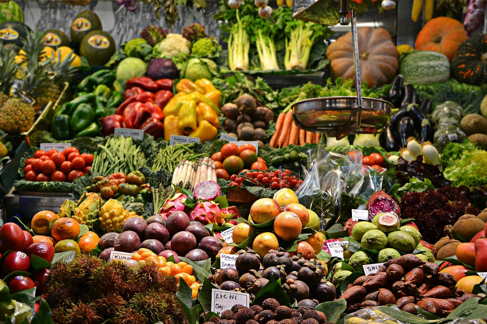
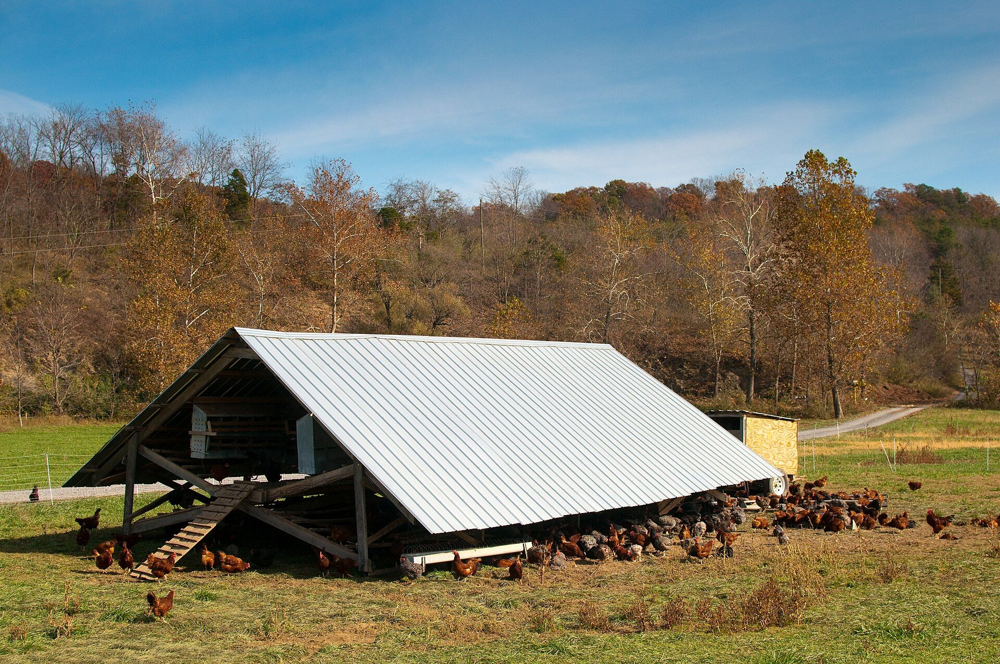
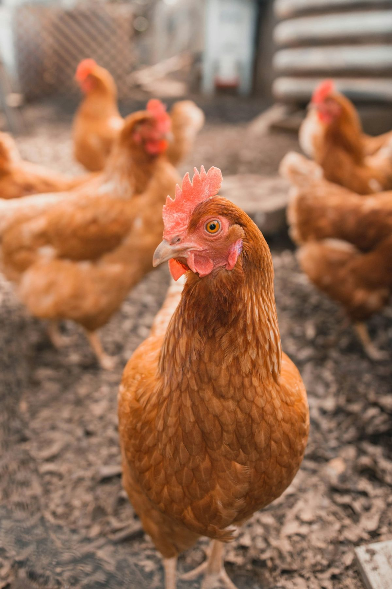

Visit the Farm Stand — South of Molalla, Oregon
Seasonal produce, eggs, and honey at the stand. Stop by for farm-fresh goods and say hello to the flock.
Plan Your Visit
Fresh Eggs & Pasture-Raised Pork, Raised Right Here
A family farm on 13 acres south of Molalla, Oregon — regenerative, no-till since 2023, and run by the family that lives here.
Our hens follow fresh grass in mobile coops, our pigs root and graze the way pigs are meant to, and our bees work the hedgerows. No shortcuts, no feedlot — just animals on grass, raised by our family.
Everything we sell is raised or made on this farm, and the way we sell it is simple on purpose: eggs by the dozen, honey by the jar, and pork by the whole or half animal — the way farm families have always bought it.
Our Story
Eggs by the dozen from our pastured hens. Whole and half hog shares to fill your freezer. Raw honey from our own hives. Head to the shop to see what’s available and how to get it.
Visit the Shop
Seasonal produce, eggs, and honey at the stand. Stop by for farm-fresh goods and say hello to the flock.
Plan Your VisitWe supply whole animals and feeder stock for butchers, chefs, and restaurants. Partner with us for quality pasture-raised pork on a consistent basis.
Contact for WholesaleLooking for something else we do? You’re one click away.
Live animals live over there — show pigs, weaner pigs, and breeding stock from our genetics program.
Visit CFF GeneticsThe software that runs this farm — animal records, Prop 12 movement tracking, and farm management built by a farmer.
Visit CFFOS